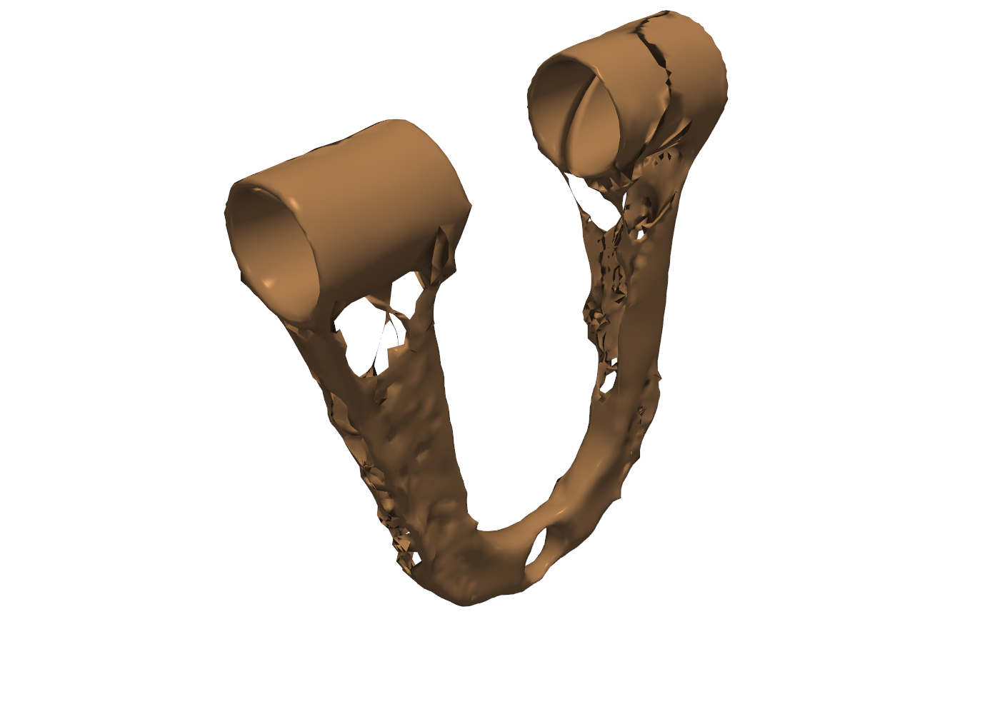
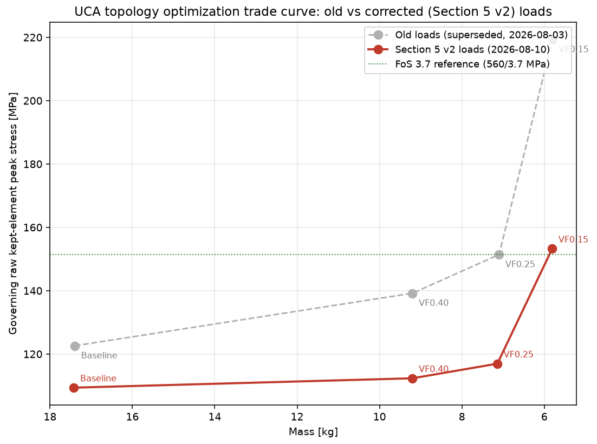
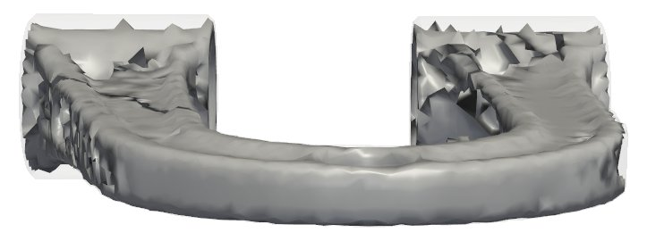
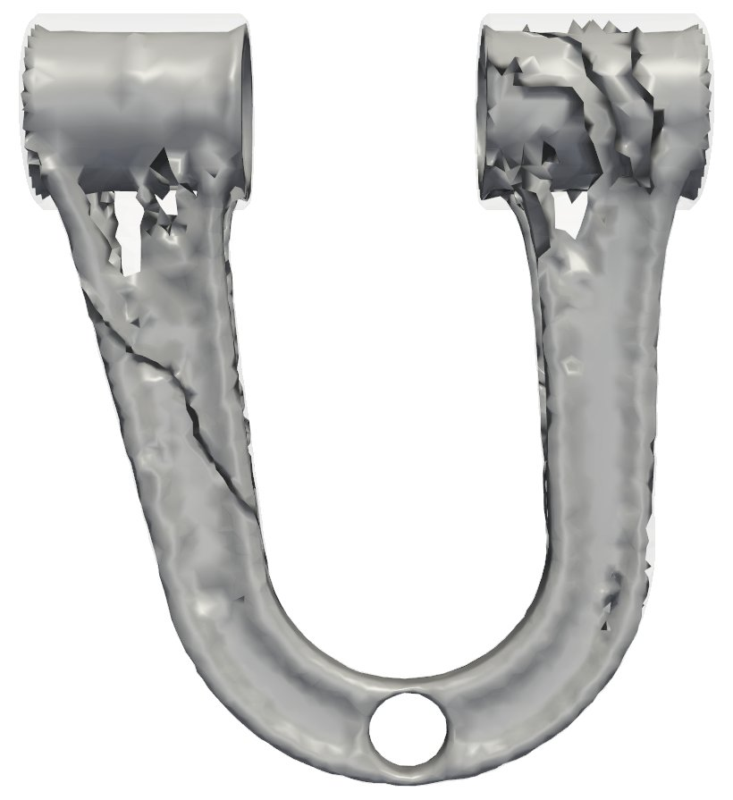
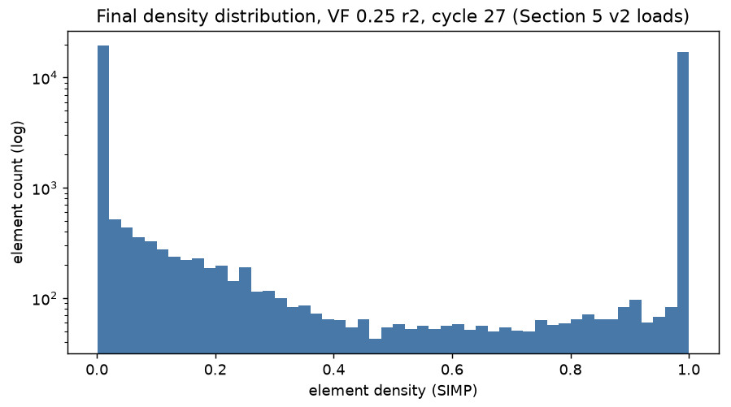
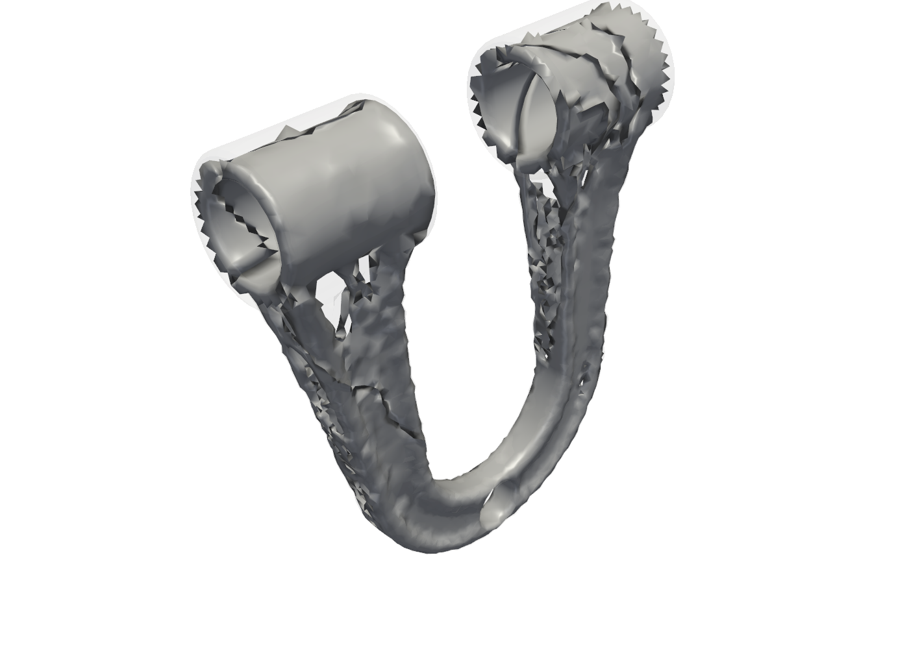
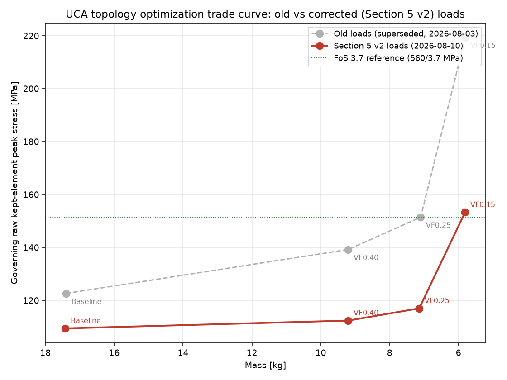

Upper Control Arm: Multi-Load-Case Topology Optimization and Fatigue
- Solver
- Abaqus/Standard + Tosca
- Verified by
- Mesh ladder, equilibrium 0.0000%, hand calculation
- Headline
- −59% mass17.4 to 7.1 kg, FoS 4.79
- Load cases
- Braking in a turn, cornering, bump

Problem
A double-wishbone upper control arm links the wheel knuckle to the chassis and must survive braking, cornering and bump loads without excess mass. The part was reverse-engineered in SolidWorks to Golf R-class vehicle parameters (a double-wishbone front corner sized to Golf R-class mass, wheelbase, track and tyre size, not a literal model of the production part, which is MacPherson strut) and validated in Abaqus under three load cases derived from vehicle dynamics: Brake-in-Turn, Cornering and Bumping. The goal was a minimum-mass design across all three load cases simultaneously, not just the worst single one, with a genuine independent check that the finite element model was telling the truth.
Method
Partway through the project, an audit of the braking free body from first principles found a factor-2.16 error in the original Brake-in-Turn moment arm: the original derivation used the tyre rolling radius (324 mm) as the lever arm for the braking force, when the correct arm is the lower ball joint height (150 mm), because brake torque is generated and reacted entirely within the knuckle and never crosses the ball joints. The correction was made, the whole campaign (baseline, and topology optimization at volume fractions 0.40, 0.25 and 0.15) was re-run end to end under the corrected loads, and a single, consistent stress-extraction method (raw, unfiltered, kept-element maxima at SIMP density greater than 0.5) was adopted everywhere, retiring an earlier interior-filtering method that had been excluding the free surface where an optimized shape's peak stress actually lives. Design space was the arm's web, with 10 mm frozen collars at the three mounting interfaces; objective was minimum strain energy summed over all three load cases so one shape had to survive all of them, not just the governing one.
Validation
Mesh convergence on the baseline blank is solid: displacement at 10, 7 and 5.5 mm seed sizes agrees to under 0.1 percent. Reaction forces close to 0.0000 percent in every solve, which is a solver convergence requirement and not by itself independent validation, so an independent hand beam-calculation cross-check was built instead. On the un-optimized blank the hand calculation and the finite element model disagreed by 16.2 times, an honestly reported failed check, because a simple beam model cannot capture the blank's load path. On the recommended volume-fraction-0.25 design, modelled as a two-strut load path, the hand calculation and finite element model agree to within 0.88 to 1.76 times across two load-sharing bounds, a genuine pass. Mesh convergence of the optimized shape itself was not separately re-studied, which is stated as a gap rather than assumed clean.
Headline results
| Design | Mass | Governing peak stress | FoS |
|---|---|---|---|
| Baseline blank | 17.42 kg | 109.38 MPa | 5.12 |
| VF 0.40 | 9.20 kg | 112.34 MPa | 4.98 |
| VF 0.25 (recommended) | 7.14 kg (−59%) | 116.96 MPa | 4.79 |
| VF 0.15 | 5.81 kg | 153.23 MPa | 3.65 |
Fatigue was assessed analytically against the corrected Cornering service load (unfactored, dividing out the 1.6× abuse multiplier), not with an fe-safe run: modified-Goodman margin of 3.60 against a machined endurance limit and 2.07 as-forged, both comfortably in the infinite-life regime with a Miner damage sum of approximately zero.
In motion




Figures


Limitations
- Mesh convergence was studied on the baseline blank (10/7/5.5 mm, under 0.1 percent spread) but not separately re-run on the optimized volume-fraction-0.25 shape; this is a stated gap.
- Fatigue is an analytical Goodman check against a service load, not a full multiaxial fatigue simulation and not an fe-safe run.
- The part is a double-wishbone front corner sized to Golf R-class vehicle parameters, not a model of the production Golf R front axle, which is MacPherson strut.
- The hand-calculation cross-check failed by 16.2× on the un-optimized blank, a genuine limitation of a simple beam idealisation against the blank's real load path, and passed only once modelled as the optimized design's actual two-strut path.